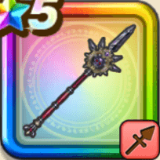

魔幻槍
攻略班 8.5点 / あしばらい絶対零槍アタックカンタソウルイミテーションもろばの魔槍術創生の魔力
くわしい特徴
【レベル別習得スキル】 Lv1【パラディン】攻撃力+5 Lv10あしばらい（消費MP：4）敵1体に威力120%の体技ダメージを与えたまに転ばせる Lv15絶対零槍（消費MP：43）敵全体に威力390%のヒャド属性斬撃ダメージを与え、たまに敵の守備力を下げる Lv20アタックカンタ（消費MP：最大MPの10%）前方にバリアをはり、自身が敵から受ける斬撃・体技(一部を除く)を跳ね返す(戦闘中1回のみ使用可能) Lv30ソウルイミテーション（消費MP：55）敵1体にたまに直撃するバギ属性の750%の斬撃ダメージを与え、自身は反撃待機状態となる。状態中は受けたダメージを10倍にして反撃する Lv35けもの系へのダメージ+5% Lv40ドラゴン系へのダメージ+5% Lv45攻撃力+12 Lv50もろばの魔槍術（消費MP：1）自身が反撃か反射を発生させた時に自身のHPの2%を消費し、消費量に応じて反撃・反射の威力を上げる(効果6ターン) Lv50創生の魔力（消費MP：7）行動開始時にHPを一定量回復する効果を自身に付与する 【限界突破スキル】 1凸スキルの斬撃・体技ダメージ+7% 2凸スキルの斬撃・体技ダメージ+7% 3凸スキルの斬撃・体技ダメージ+7% 4凸スキルの斬撃・体技ダメージ+7%